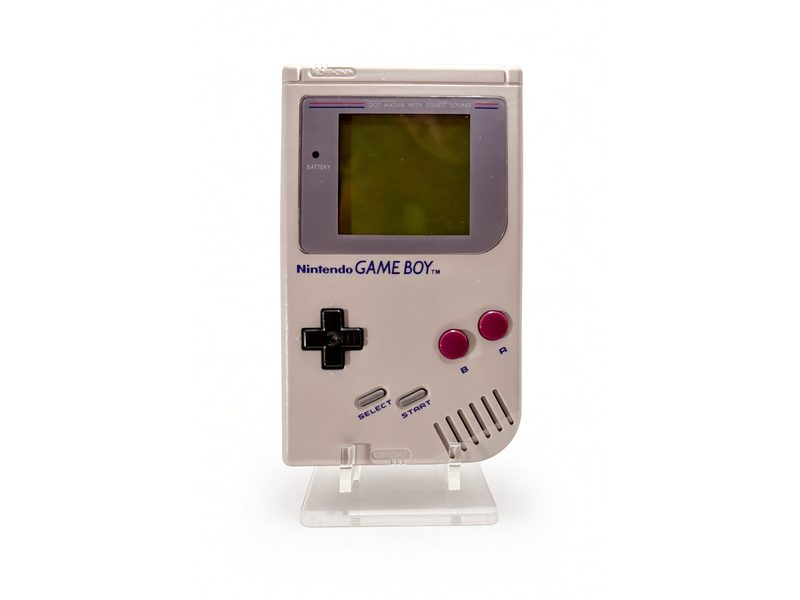
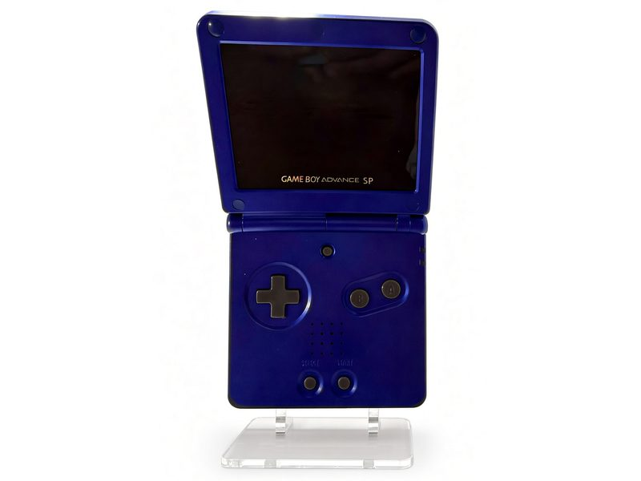
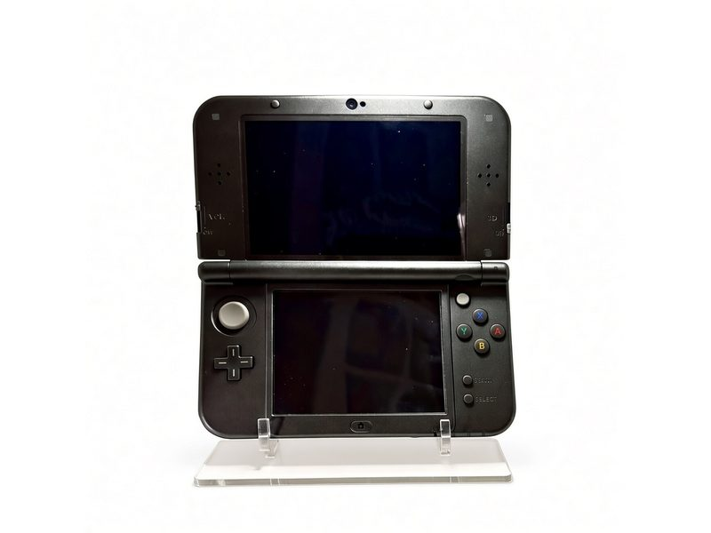
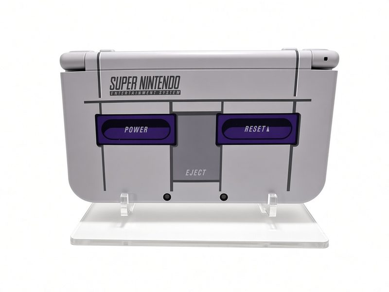
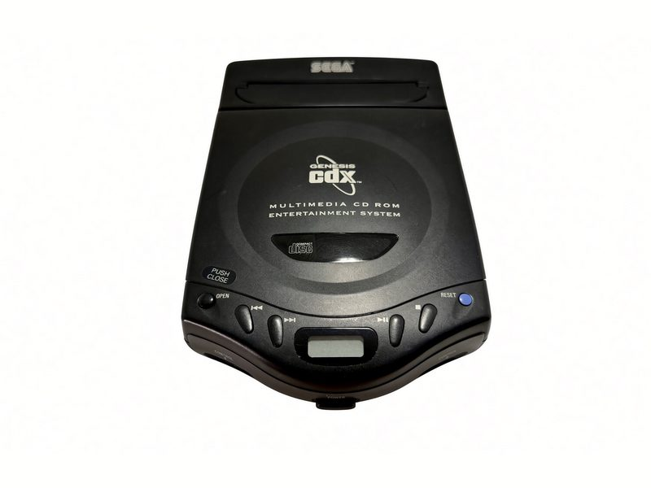
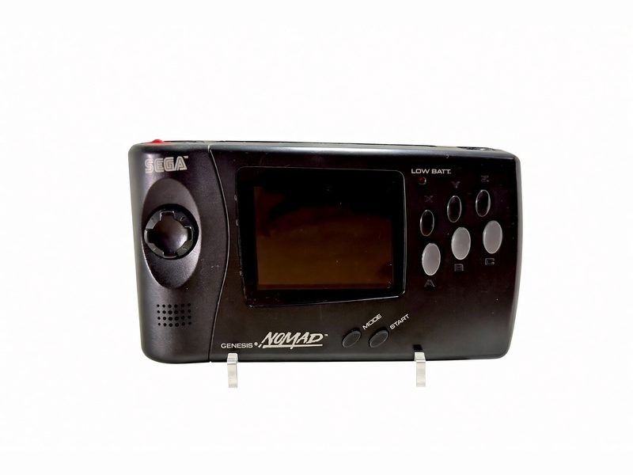
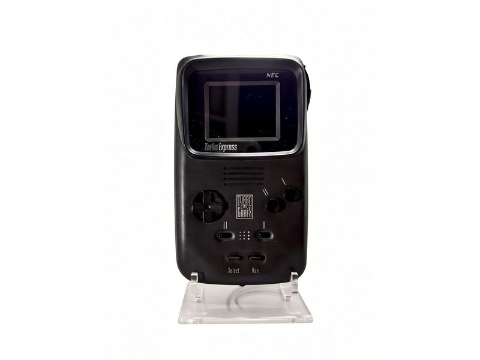
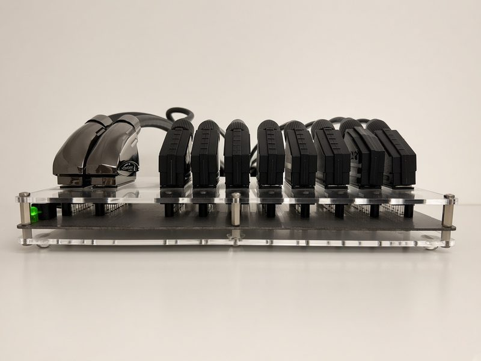
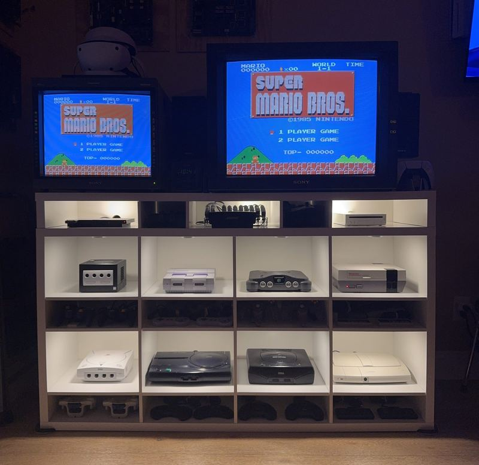

The Consoles
The home-console side of the collection — the machines that fed the CRTs before the cabinets moved in. More than a few wear RGB mods, so the Sony monitors get the signal they deserve.
Nintendo

NES — Top Loader
The late-life redesign, upgraded with an NESRGB board — pure RGB out of a console that never officially had it.

Game Boy — DMG-01
Launch-edition gray brick, the one that survived everything.

Super Nintendo
The 16-bit Nintendo — Mode 7 and the SPC700 sound chip.

Nintendo 64
Fitted with an RGB upgrade — Mario 64 the way the arcade monitors want it.

Game Boy Advance SP — Cobalt
The cobalt clamshell, upgraded from stock.

GameCube
The black edition, handle and all. Nintendo’s most carryable home console.

New 3DS XL — Black
The plain black clamshell, and the last of the two-screen Nintendo handhelds.

New 3DS XL — SNES Edition
The one that looks like a tiny Super Nintendo folded in half — purple buttons, grey shell and all.
Not pictured: the NES Front Loader (1985) — not on the display shelf.
Sega

Genesis CDX
The slim Genesis/Sega CD combo (MK-4121), running strong on a freshly replaced laser lens.
JVC X'Eye
JVC's take on the Genesis + Sega CD combo — currently off at iFixRetro for a full servicing. Follow the bench →

Nomad
Portable Genesis, batteries not sufficient.

Saturn
Sega's 2D powerhouse and quiet legend.

Dreamcast
The last Sega console, still thinking.
Not pictured: the Genesis Model 1 (1989, modded with HDG S-Video and stereo output jacks) — not on the display shelf.
NEC & Sony

Turbo Express
Full TurboGrafx games in your hands — a handheld so far ahead of its moment it still looks unlikely.

PC Engine Duo-R
PC Engine and CD-ROM² in one white machine, straight from the market that loved the PC Engine best — fitted with a region mod so it runs the US TurboGrafx library too.

PlayStation 2 Slim
Runs its library from a MemCard Pro 2 with FMCB/OPL — the whole PS2 catalog, no discs required.
Not pictured: the TurboGrafx-16 (1989) — not on the display shelf.
Every one of these reaches a CRT over analog RGB, through a pair of SCART switchers and a stack of BNC breakout cables. The Signal Chain shows the whole path.

